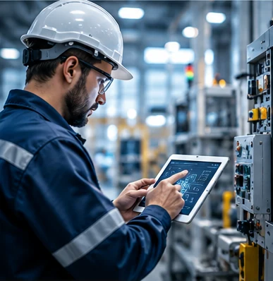
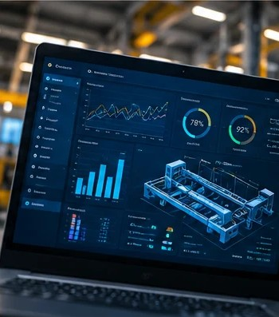
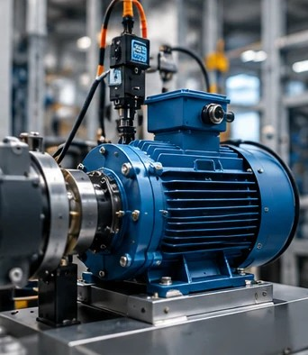
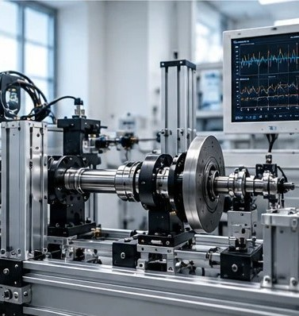

Vanguard Center / UM6P
Electromechanical Systems EngineerSystem architecture, integration, actuator control, commissioning, field testing and technical coordination.
ENGINEERING FOR RELIABLE AND EFFICIENT INDUSTRIAL SYSTEMS
Control Systems • Industrial Automation • Maintenance & Reliability • Industrial Data
I work at the intersection of electromechanical systems, control, maintenance and data to improve the reliability and performance of industrial equipment.
⚙ Control & Automation
▥ Maintenance & Reliability
▤ Industrial Data & Analytics
⌁ Electromechanical Systems
ABOUT ME
I am an electromechanical engineer with 7+ years of experience in control systems, industrial automation, maintenance, commissioning and troubleshooting. My background includes the design, integration, validation and field deployment of electromechanical systems, with a growing focus on using data and engineering methods to improve reliability and performance.

EXPERIENCE
System architecture, integration, actuator control, commissioning, field testing and technical coordination.
Real-time PID, cascaded, adaptive and MPC control; sensor integration; HIL/SIL validation and field testing.
Preventive/corrective maintenance, electromechanical troubleshooting, reliability and production continuity.
SELECTED PROJECTS
Portfolio in development
Analysis of maintenance data to identify downtime patterns, critical equipment and improvement actions.

Signal analysis and anomaly detection concepts for condition-based and predictive maintenance.

Non-confidential demonstration of modeling, closed-loop control, validation and performance analysis.
TECHNICAL CAPABILITIES
PID · MPC · PLC / TIA Portal · HIL/SIL · Process Control
MATLAB/Simulink · Python · C/C++
FMEA · Commissioning · Troubleshooting · Preventive/Corrective Maintenance
Modbus · CAN · Electrical Machines · Power Electronics · AutoCAD
CONTACT
For full-time engineering opportunities, technical collaboration or selected project discussions.